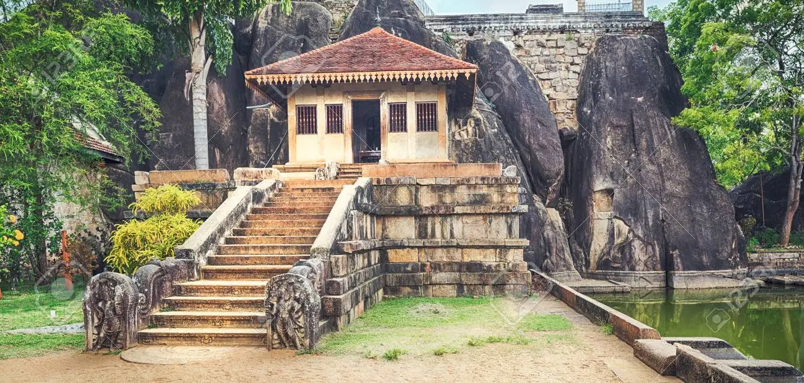
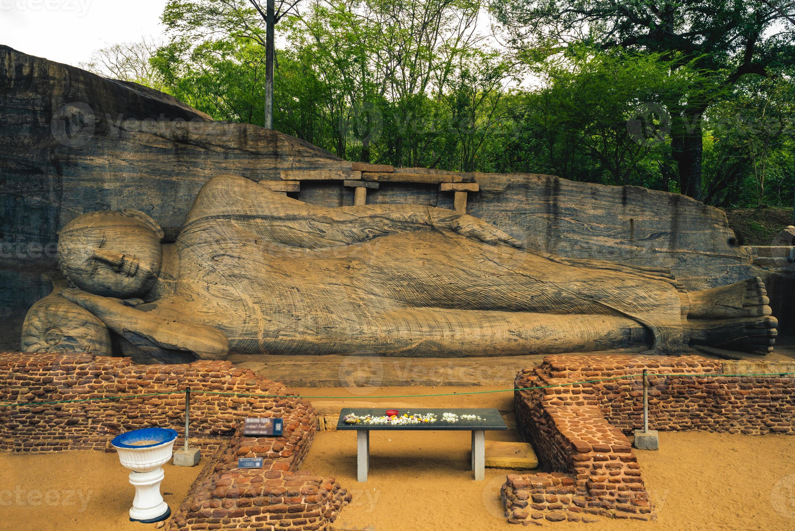

The Best Places to Travel in North Central Province...
Ruwanweli Maha Seya
 |
Ruwanweli Maha Seya, also known as Mahathupa (The Great Thupa) is a stupa (hemispherical structure containing the remains) in Anuradhapura, Sri Lanka. Two quarters or one Dona of the relics of the Buddha are included on the stupa, which makes it the largest collection of his remains anywhere. It was built by the Sinhalese King Dutugemunu in c. 140 B.C., who became king of Sri Lanka after the war when the Chola King Elāra (Ellalan) you are defeated. It is also known as Swarnamali Seya, Svaṇṇamāli Mahaceti (by Pali) and Rathnamali Seya. This is one of the "Solosmasthana" (16 places of honor) and "Atamasthana" (8 places of respect). The stupa is one of the tallest ancient monuments in the world, standing at 103 m (338 ft) and circumference 290 m (951 ft). The original stupa was about 55 m (180 ft) tall and fixed by many kings. The Kaunghmudaw Pagoda in Sagaing, Myanmar is modeled after this stupa Mahavamsa contains a detailed account of the construction and event of the stupa opening. The stupa was covered with forest since the 19th century. After an effort to raise money for the bakery, it was repaired early 20th century. Ruwanweli Seya Restoration Society, especially philanthropist Hendrick Appuhamy, donated Rs 20 million (1912) for restoration projects, The foundation was established in 1902 and the last crowning of the stupa took place on June 17, 1940.
Isurumuniya
|  |
Isurumuniya is a Buddhist temple near Tissa Wewa (Tisa tank) inside Anuradhapura, Sri Lanka. There are four paintings of special interest in this Vihara. They are Isurumnians' lovers, Elephant Pond and Royal Family.
Gal Viharaya
|  |
Gal Vihara (Sinhala: ගල් විහාර), and originally Uttararama (Sinhala: උත්තරාම), is a Buddhist rock temple located in the ancient city of Polonnaruwa in the North Central province, Sri Lanka. Built in the 12th century by Parakramabahu I. The central feature of the temple has statues of Buddha, carved in the face of a large granitic (granite gneiss) rock. The images contain a large number sitting, another small image sitting inside a synthetic cave, a dry person and a seated person. These are considered to be some of the finest examples of ancient times Sinhalese recording and painting art, and they made Gal Vihara the most visited monument in Polonnaruwa. Uttararama images follow a different style from the images of the ancient Anuradhapura period, and show a big difference. Identity image ownership is subject to a certain amount of content in the middle historians and archaeologists, some of whom argue that it depicts the monk Ananda instead of the Buddha. Each of the statues are carved in a way that uses the highest possible rock surface, and their height appears to be relative determined based on the height of the rock itself. Each image appears to have its own image gallery, e.g. showing the remains of the brick walls in the area. Uttararama was where I became a Parakramabahu congregation he consecrated a monastery to cleanse the Buddhist priesthood, and later he painted a code of conduct for them. This code of conduct it is written on the same stone inscription containing images of the Buddha.
Minneriya National Park
 |
Minneriya National Park (Sinhala: මින්නේරිය ජාතික වනෝද්යානය, Roman ossuary: Minnēriya Jātika Vanodyānaya; Tamil: மின்னேரியா தேசிய வனம், romanized: Miṉṉēriyā Tēciya Vaṉam) national park in the North Central Province of Sri Lanka. The area was designated as a national park on the 12th August 1997, as originally declared as a wildlife sanctuary in 1938. [1] Reason for declaring the area as protected is to protect the catchment area in the Mineral tank and the surrounding wildlife. The tank is historically important, as it was built by King Mahasen in the third century AD. The park is dry Seasonal food for elephants living in the Matale, Polonnaruwa, and Trincomalee forests regions. The park earned Rs. 10.7 million in the six months ending August 2009. [2] Once Kaudulla and Girithale, Minneriya formed one of the 70 most important bird sanctuaries (IBAs) in Sri Lanka. [3] Park i It is located 182 kilometers (113 mi) from Colombo.